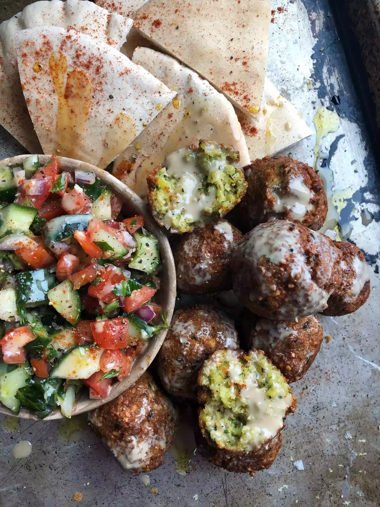

Falafel Recipe

Description
Perfectly Crispy and Fluffy Falafel
Just like the ones you taste in a Greek restaurant!
Ingredients
- 1 1/2 (15 ounces) cans chickpeas, drained
- 1 1/2 onions, chopped
- 3/4 cup chopped fresh parsley
- 3 cloves garlic, chopped
- 2 eggs
- 1 tablespoon ground cumin
- 1 1/2 teaspoons ground coriander
- 1 1/2 teaspoons salt
- 1 1/2 teaspoons lemon juice
- 1 1/2 teaspoons baking powder
- 1 pinch ground black pepper, or to taste
- 1 1/2 cups of bread crumbs
- 1 tablespoon olive oil, or as needed